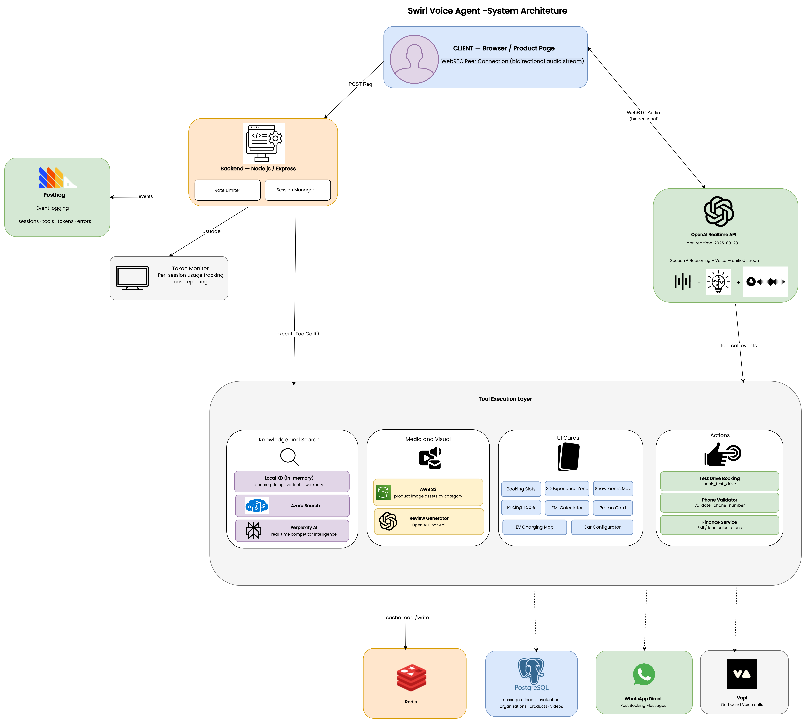

Deploy human-like voice agents directly inside your product experience answer questions, guide decisions, and complete actions in real time. No replatforming. Go live in days.
Buyers don’t come to browse they come with specific, high-intent questions. Static pages can inform, but they cannot resolve uncertainty in the moment it matters.
Contextual, real-world queries that require live answers not static specifications. These are asked at the exact moment a buyer decides or drops off.
Financial decisions require dynamic calculations. Static pages break flow by pushing users to external tools losing intent in the process.
Buyers evaluate, not just explore. Without real-time comparisons, they leave to research elsewhere and rarely return.
No mechanism to engage users during peak intent. Sessions end without resolution. Average time on page stays low, conversions suffer.
Discovery and action are disconnected. Booking happens elsewhere, introducing friction and increasing drop-off at every step.
Businesses don’t know what users asked, where they hesitated, or why they left. High-intent signals exist but go completely uncaptured.
Session data revealed a clear pattern drop-off is not caused by low intent, but by unanswered questions at critical decision moments.
The problem isn’t traffic or product quality. It’s the inability to respond in real time.
The market didn’t need another widget.
It needed a system that can:
A voice-first sales advisor embedded directly in product pages. Visitors speak naturally. The advisor responds in spoken language, surfaces live data, renders UI components mid-conversation, and moves buyers through a complete purchase journey without leaving the page.
No forms. No menus. No scripted flows. The buyer speaks; the advisor listens, understands intent, and responds handling interruptions, follow-ups, and context switches gracefully.
Voice triggers visual. The right product information, images, and data appear on screen in direct response to the spoken question not as a static page, as a live answer.
The advisor guides, recommends, and explains differences. Competitor questions answered with live retrieval. The buyer sees the comparison; the advisor narrates it.
Name, phone, model preference, location gathered naturally through conversation, not a form. The advisor predicts the next buying move and nudges at the right moment.
Phone spoken and parsed. Location selected from a map card. Time slot picked from a grid. Confirmation spoken by the agent. No form. No redirect. No new tab. Done.
The advisor doesn't just answer it acts. 19 tools fire mid-conversation to execute live logic and render UI components across six capability layers.
A low-latency, unified voice pipeline where speech understanding, reasoning, and response generation happen in a single stream enabling human-like conversations and real-time action execution.

At ~900ms, conversations feel delayed and robotic. Under 500ms, they feel natural directly impacting engagement, trust, and conversion.
In-memory model configs specs, pricing, variants, and rules served instantly without retrieval.
Vector search across a structured knowledge base, matching embeddings to the full product corpus.
Real-time web retrieval for competitor data, live pricing, and market signals on demand.
The decisions that shaped the platform and why each one mattered commercially, not just technically.
The agent answers the buyer's stated question before any upsell or data capture. Trust is built answer by answer. The sale follows naturally not through pressure, through clarity.
Voice triggers visual. Pricing questions surface an interactive EMI calculator. Charging questions render a live map. Voice and UI are synchronised multi-modal by design, not by addition.
Every tool call, question type, and session branch is a structured event. Buyer hesitation becomes queryable data feeding back into prompt tuning, content gaps, and product decisions.
Bookings complete entirely within the voice conversation phone spoken and parsed, location selected from a map card, time slot picked from a grid, confirmation spoken by the agent. No form. No redirect.
Agent personality, tool permissions, knowledge scope, and escalation rules all live in config files. New products deploy without a release cycle. Behaviour changes go live in minutes. New verticals in hours.
Swirl deployed a real-time AI voice advisor across product detail pages for a leading automotive OEM in the GCC guiding buyers through vehicle exploration, live calculations, and test-drive bookings, all within a single conversation.
Beyond immediate sales, the AI revealed critical insights about buyer behavior that reshaped their digital strategy.
Most buyer questions were highly technical focusing on charging infrastructure and real-world range rather than just pricing. Content and sales positioning shifted accordingly.
The AI made hesitation measurable: identifying exactly what people ask, where they pause, and which specific nudges EMI, maps, comparisons successfully move them forward.
Conversation insights created a clear, prioritised backlog for content updates, PDP improvements, and future campaign messaging turning every session into a product signal.
The Swirl advisor turned our BYD model pages into a real conversation. Instead of hoping visitors understand EVs, we now see what they actually care about and move them to test-drives faster without replatforming anything.
What building and shipping a production AI voice platform that drove measurable commercial outcomes actually taught us.
Traffic and creative quality are rarely the bottleneck in high-consideration commerce. The unanswered question at the moment of intent is. Solve that conversion follows.
Buyers who engaged by voice asked more questions, spent more time on page, and converted at higher rates. Voice removes the effort of typing more questions asked means more intent surfaced.
EMI calculators, charging maps, and comparison cards outperformed pure voice responses. The ability to render visual output in response to a spoken query was the most commercially impactful capability in the tool layer.
The structured record of questions, hesitation points, and intent signals has independent strategic value separate from the direct conversion effect. It informs content, product, and campaign decisions in ways prior analytics tooling couldn't enable.
New products went live in hours using the model registry pattern. Shared logic updates propagated automatically. Rebuilding per product would have made the platform uneconomical at this scale.
The 400ms latency reduction from a unified stream over a chained pipeline was the single highest-leverage technical decision. It determined whether the conversation felt human or robotic and that distinction determined whether users continued or abandoned.
From a single deployment to enterprise-grade multi-tenant infrastructure the same platform that handled 2 lakh+ conversations continues to scale horizontally with zero architectural changes.
The core is industry-agnostic. The same model registry, tool execution engine, knowledge retrieval stack, and session state management adapts to any vertical via configuration alone.
Real-time conversation trends, hesitation hotspots, tool engagement, and session-to-conversion funnels for non-technical operators. No SQL. No BI tool. No data team required.
Select an industry template, define personality and scope, connect knowledge sources, enable tools, and publish all through a point-and-click interface. Under 1 hour from signup to live agent.
Planned verticals: Real Estate (property Q&A, viewings), Healthcare (booking, triage), Financial Services (loan pre-qual), E-Commerce (discovery, upsell), Hospitality (concierge, booking).
Native voice in Arabic, French, Spanish, Hindi, and Mandarin with language-specific personality calibration, not just translation. Regional phrasing, cultural norms, and local market context built in.
AI-initiated conversations triggered by CRM events appointment reminders, incomplete booking follow-ups, re-engagement of high-intent sessions, and renewal nudges.
Track buyer behaviour across multiple sessions and products. Understand which research paths lead to conversion and personalise each session from prior interaction history, not just current context.
The gap between what businesses need from customer communication and what they can afford with human teams is widening. Customer expectations are higher, volumes are growing, and the economics of traditional contact centres are under pressure.
AI Voice Agents are not a future technology. The question is no longer whether to deploy them it is how quickly you can reach production without rebuilding infrastructure from scratch.
Learn more at GoSwirl.ai →